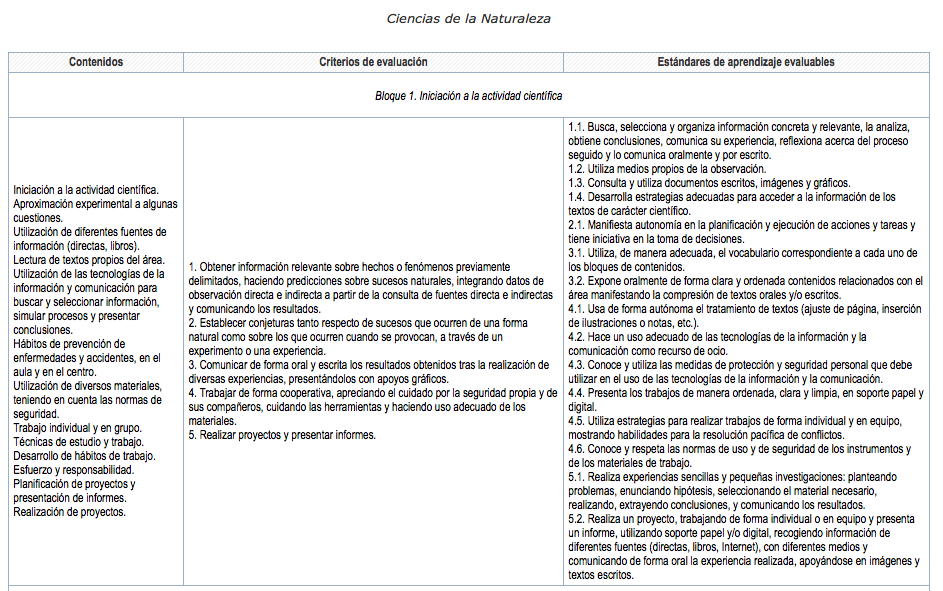
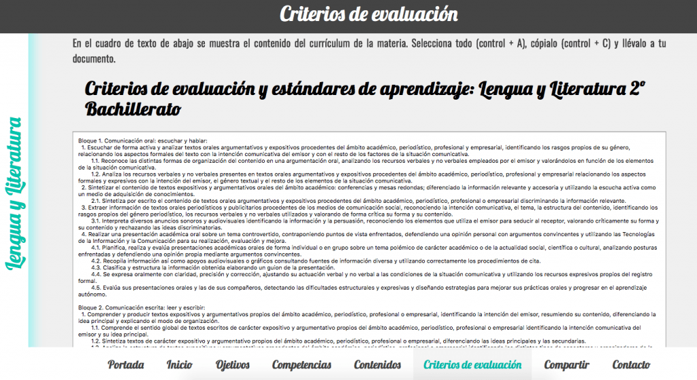

Definición de estándares de aprendizaje
Los estándares de aprendizaje eran un elemento curricular definido por la LOMCE y que entendíamos como instrumentos que permiten concretar aquello que el alumno debe saber, comprender y saber hacer.
*IMPORTANTE: Ten en cuenta que los estándares de aprendizaje ya no existen en el sistema educativo español.
La evaluación es una de las partes más importantes en el proceso de enseñanza-aprendizaje, y también en tu programación. Por eso necesitamos entender bien la definición de estándares de aprendizaje, cómo aplicarlos y cómo relacionarlos con el resto de elementos de la programación.
Qué son los estándares de aprendizaje evaluables
En el Real Decreto 126/2014, de 28 de febrero, por el que se establece el currículo básico de la Educación Primaria encontramos la definición de estándares de aprendizaje evaluables como:
especificaciones de los criterios de evaluación que permiten definir los resultados de aprendizaje, y que concretan lo que el alumno debe saber, comprender y saber hacer en cada asignatura; deben ser observables, medibles y evaluables y permitir graduar el rendimiento o logro alcanzado. Su diseño debe contribuir y facilitar el diseño de pruebas estandarizadas y comparables.
RD 126/2014, de 28 de febrero
¿Para qué sirven los estándares de aprendizaje, entonces? Como bien se indica en el currículo, nos ayudan a definir aquello que el alumno debe aprender durante todo un curso, durante una unidad didáctica o incluso en una actividad concreta. Sabiendo lo que debemos conseguir, es más fácil dibujar el camino hacia ese logro. Y esto la vamos a materializar con una evaluación mediante rúbricas.
Estándares de aprendizaje como indicadores de logros
En otras palabras, los estándares de aprendizaje hacen posible ver lo que los alumnos han aprendido. Esto lo conseguimos a través de actividades y pruebas con las que damos una calificación al aprendizaje del alumno. Una calificación que muestra en qué grado los estudiantes han adquirido los los objetivos, los contenidos y las competencias propuestas.
Significado de estándar de aprendizaje
Llamarlo estándar de aprendizaje tiene un por qué. El estándar es un patrón; se trata de un resultado al que todos los alumnos deben llegar, y es el mismo para todos. Se definen así los estándares de aprendizaje, como habilidades o conocimientos que el conjunto del alumnado debe adquirir.
Dónde encontrar los estándares de aprendizaje
Los estándares de aprendizaje evaluables describen los resultados de aprendizaje del alumnado, tanto en Primaria como en Secundaria. ¿Cuáles son los estándares de aprendizaje? Cada una de las asignaturas del currículo, tiene sus estándares de aprendizaje, que podemos encontrar en los anexos I (para materias troncales) y II (para materias específicas) de dichos currículos.

Ejemplos de estándares de aprendizaje LOMCE en 2020
Si nos vamos al currículo de Primaria o de Secundaria, o bien a la aplicación web de Vírgula, veremos todos los estándares de aprendizaje. Vamos a ver algunos ejemplos por materias:
Primaria
Ciencias Sociales
10.1. Desarrolla actitudes de cooperación y de trabajo en equipo, valora las ideas ajenas y reacciona con intuición, apertura y flexibilidad ante ellas.
10.2. Planifica trabajos en grupo, coordina equipos, toma decisiones y acepta responsabilidades.
Educación Física
1.1. Adapta los desplazamientos a diferentes tipos de entornos y de actividades físico deportivas y artístico expresivas ajustando su realización a los parámetros espacio-temporales y manteniendo el equilibrio postural.
1.2. Adapta la habilidad motriz básica de salto a diferentes tipos de entornos y de actividades físico deportivas y artístico expresivas, ajustando su realización a los parámetros espacio-temporales y manteniendo el equilibrio postural.
Eso y Bachillerato
Cultura Audiovisual, 1º Bachillerato
3.1. Analiza la obra gráfica de fotógrafos que trabajen en blanco y negro: Martín Chambi, Irvin Penn, Cecil Beaton, Ansel Adams, etc. 3.2. Realiza dos tratamientos de elaboración digital a una misma composición: en B/N y color. Analiza el diferente resultado estético y semántico.
Biología y Geología, 4º ESO
1.1. Compara la célula procariota y eucariota, la animal y la vegetal, reconociendo la función de los orgánulos celulares y la relación entre morfología y función.
2.1. Distingue los diferentes componentes del núcleo y su función según las distintas etapas del ciclo celular.
Lengua Castellana y Literatura, 2º Bachillerato
2.1. Desarrolla por escrito un tema del currículo con rigor, claridad y corrección ortográfica y gramatical, aplicando los conocimientos gramaticales y pragmáticos para mejorar la expresión escrita. 2.2. En sus producciones escritas ajusta su expresión a las condiciones de la situación comunicativa (tema, ámbito discursivo, tipo de destinatario, género textual…) empleando los recursos expresivos propios del registro formal y evitando el uso de coloquialismos.
Cómo evaluar por estándares de aprendizaje
Vamos a aprender rápidamente cómo evaluar por estándares de aprendizaje. Verás cómo la programación didáctica ya no parece algo tan complejo de hacer.
Estándares de aprendizaje y criterios de evaluación
Como puedes ver en la captura de pantalla, los estándares de aprendizaje van acompañados de criterios de evaluación.

Así, por ejemplo, tenemos como criterio de evaluación «2. Sintetizar el contenido de textos expositivos y argumentativos orales del ámbito académico: conferencias y mesas redondas; diferenciado la información relevante y accesoria y utilizando la escucha activa como un medio de adquisición de conocimientos«, el cual se concreta con el estándar de aprendizaje «2.1. Sintetiza por escrito el contenido de textos orales argumentativos y expositivos procedentes del ámbito académico, periodístico, profesional o empresarial discriminando la información relevante«. ¿Qué quiere decir esto? Que tenemos un ítem para evaluar, el criterio de evaluación, más amplio. Para hacerlo observable, medible y evaluable, necesitamos el estándar de aprendizaje.
En este caso, podemos organizar una charla en clase y pedir a los alumnos que tomen nota. Al final, entregarán el documento. De esta forma, conseguimos evaluar ambos ítem: sintetiza el contenido de textos orales (criterio de evaluación) y deja por escrito la información relevante (estándar de aprendizaje).
Estándares de aprendizaje y objetivos
Ya hemos dicho en alguna ocasión que todos los elementos de la programación deben estar relacionados entre sí para dar coherencia y sentido a la programación. La relación entre objetivos y estándares evaluables es sencilla: el inicio y el final del proceso de enseñanza-aprendizaje. Así, siguiendo con el ejemplo anterior, uno de nuestros objetivos en Lengua y Literatura de 2º de Bachillerato puede ser «sintetizar las ideas principales de un texto». Con el estándar de aprendizaje «Sintetizar el contenido de textos expositivos y argumentativos orales […]», vemos si el alumnado ha alcanzado el objetivo o no. Sencillo, ¿verdad?
Estándares de aprendizaje y Competencias Clave
Si nos vamos a la Orden ECD/65/2015, de 21 de enero, por la que se describen las relaciones entre las competencias, los contenidos y los criterios de evaluación de la educación primaria, la educación secundaria obligatoria y el bachillerato, en su artículo 7 encontramos la guía para evaluar las competencias clave.
Es necesario establecer relaciones entre estándares de aprendizaje y competencias clave para medir el nivel de desempeño de las competencias. Para ello, debemos diseñar estrategias e instrumentos que permitan ver el grado de aprendizaje del alumno. ¿Cómo? A través de la resolución de actividades y problemas. Los indicadores de logro (rúbricas, escalas de evaluación, etc.) miden el nivel de desempeño de las competencias.
¿Cómo relacionamos, entonces, estándares de aprendizaje y competencias clave? Muy sencillo. Tenemos el estándar anterior, sobre sintetizar información en un discurso oral. ¿Qué competencia crees que se trabaja? Fácil: comunicación lingüística. Ya tenemos hecha la relación.
Ahora, ¿cómo evaluamos la competencia? Échale imaginación. Podemos establecer una escala de 7 niveles. ¿Cuántas ideas ha sacado el alumno del discurso? Menos de 3, suspenso. Entre 3 y 5, bien. Más de 5, sobresaliente.
Ahora te toca a ti. Ve a tu programación y empieza a relacionar objetivos, competencias y estándares de aprendizaje. Crea armonía en toda tu programación y el resultado será de ?.


Hola!
Os agradezco vuestras explicaciones, que son muy claras y didácticas.
No obstante, hay dos aspectos sobre los estándares que no termino de tener claros. En una PD, ¿deben incluirse todos los estándares que los decretos de la comunidad autónoma correspondiente incluya? En el caso de Castilla la Mancha para Lengua de 3º ESO, p. ej, hay 112. Por otro lado, hay estándares de más peso que otros, así como algunos básicos. ¿Deberían estar presentes en todas las unidades? En ese caso, tendríamos una PD con cientos de ítems para evaluar.
Debes coger los que correspondan a tu curso y los puedes repartir como quieras en las unidades
Excelente material, pero aún tengo dudas
Un aporte muy interesante. Muchas gracias por la información. Reciba un cordial saludo.
No veo la diferencia entre estándares y rúbricas y me parece lo mismo estándar que criterio, total de infinitivo pasa a presente de indicativo. Ej. 2 Sintetizar 2.1 Sintetiza
Los estándares son especificaciones de los criterios. Las rúbricas son herramientas de evaluación/calificación en las que se aplican los criterios y los estándares.
Hola Anabel!
Tengo una pequeña duda, en Primaria en la asignatura de inglés pasa algo diferente ya que hay menos estándares de aprendizaje que criterios en algunos de los bloques. Entonces, no entiendo cómo se deben repartir la ponderación entre criterios y luego entre estándares.
¿Cómo se haría esto?
Gracias!
Hola..me gustaría saber acerca de los esta sarro de aprendizaje del ar4a de economía política..gracias